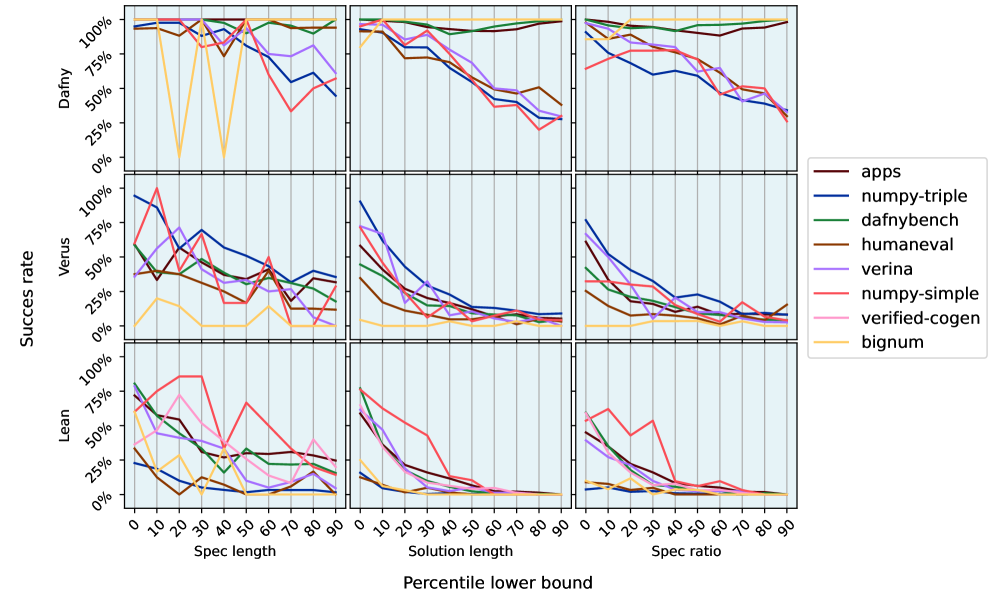

Includes 7,141 Lean formal specifications in a vericoding benchmark and reports LLM verified-synthesis success rates on them.
Abstract
We present and test the largest benchmark for vericoding, LLM-generation of formally verified code from formal specifications - in contrast to vibe coding, which generates potentially buggy code from a natural language description. Our benchmark contains 12,504 formal specifications, with 3,029 in Dafny, 2,334 in Verus/Rust and 7,141 in Lean. Of these, 6,174 are new unseen problems. We find vericoding success rates of 27% in Lean, 44% in Verus/Rust and 82% in Dafny using off-the-shelf LLMs. Adding natural-language descriptions does not significantly improve performance. We also find that LLM progress has improved progress on pure Dafny verification from 68% to 96% over the past year. The benchmark and vericoding results are shared at https://github.com/Beneficial-AI-Foundation/vericoding-benchmark
Problem
Vibe coding (LLM-generation of code from natural language) produces potentially buggy code, and existing benchmarks for formally verified program synthesis (vericoding) are limited in scale and language coverage.
Approach
The authors present the largest benchmark for vericoding with 12,504 formal specifications across three languages: 3,029 in Dafny, 2,334 in Verus/Rust, and 7,141 in Lean. Of these, 6,174 are new unseen problems. They evaluate off-the-shelf LLMs on generating formally verified code from these specifications, and also test whether adding natural-language descriptions improves performance.
Results
Vericoding success rates are 27% in Lean, 44% in Verus/Rust, and 82% in Dafny using off-the-shelf LLMs. Adding natural-language descriptions does not significantly improve performance. LLM progress has improved pure Dafny verification from 68% to 96% over the past year.

Figure 4 : Vericoding success as a function of task spec length (top row), generated code length (middle row) and spec ratio (bottom row) which is the code length divided by the spec length. sorted by size